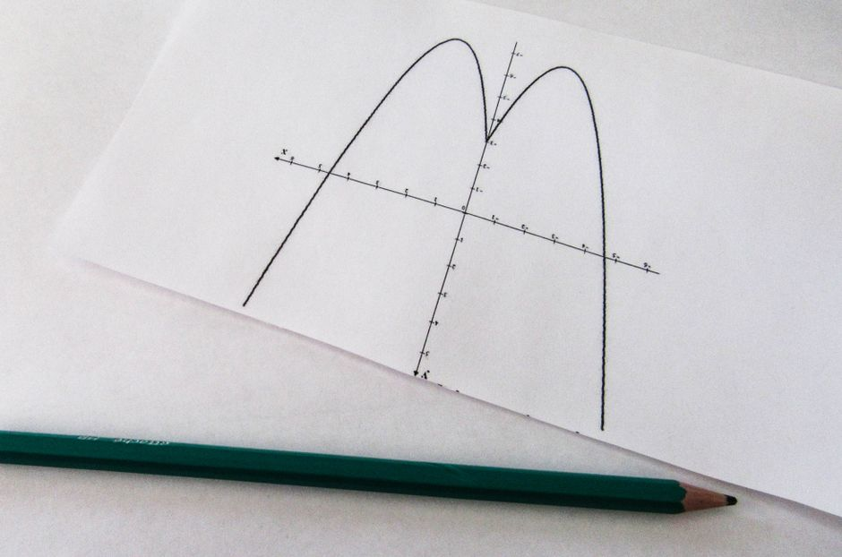

Object Detection Metrics: mAP Without Hand-Waving
A precise walkthrough of how mean average precision is actually computed, and why sloppy implementations quietly mislead you about model quality.

Why mAP deserves scrutiny
Object detection papers report a single number, mAP, and readers nod as if it were self-explanatory. In practice, very few people who cite it can reconstruct it from scratch, and that matters because mAP is not one calculation but a stack of decisions: what counts as a correct detection, how confidence thresholds are swept, how precision-recall curves get summarised, and whether that summary is averaged over classes, IoU thresholds, or both. Change any of those decisions and the number moves, sometimes by several points, without the model itself changing at all.
This is not a pedantic complaint. I have seen two detectors compared on a headline mAP figure where one used the eleven-point interpolation from older PASCAL VOC conventions and the other used the all-points interpolation typical of COCO-style evaluation. The comparison was meaningless, but it looked authoritative because both numbers were labelled mAP. If you are going to lean on this metric for a dissertation, a report, or a production decision, it is worth understanding the arithmetic well enough to catch that kind of mismatch yourself.
From a single box to precision and recall
Everything starts with Intersection over Union, IoU: the area where a predicted bounding box overlaps the ground truth box, divided by the total area covered by both. An IoU of 1.0 means a perfect match; an IoU of 0.5 means substantial overlap but real disagreement about the box's edges. To decide whether a prediction counts as a true positive, you fix an IoU threshold, commonly 0.5, and say: if this prediction's best-matching ground truth box has IoU at or above the threshold, and that ground truth has not already been claimed by a higher-confidence prediction, it is a true positive. Otherwise it is a false positive. Any ground truth box left unmatched at the end is a false negative.
Suppose a model produces ten detections for the class 'bicycle' in a test set that contains seven actual bicycles, ranked by confidence score from highest to lowest. Walking down that ranked list, at each point you can compute cumulative precision, true positives divided by all detections seen so far, and cumulative recall, true positives divided by all seven ground truths. Early on, when the model is only picking the detections it is most confident about, precision tends to be high and recall low. As you include lower-confidence detections, recall climbs but precision typically falls because you start including more mistakes.
Plotting cumulative precision against cumulative recall at every rank gives the precision-recall curve for that class. It is a jagged, sawtooth-shaped curve in practice, not the smooth arc that toy diagrams suggest, because each new true positive nudges precision up sharply while each new false positive drags it down. Average Precision, AP, is the area under this curve, and it is this area, not any single precision or recall value, that captures how well the model ranks correct detections above incorrect ones across the full range of confidence thresholds.

Turning the curve into one number
Computing the exact area under a jagged curve needs a convention, and this is where the hand-waving usually creeps in. The older PASCAL VOC approach used eleven-point interpolation: take the maximum precision achieved at recall levels of 0.0, 0.1, 0.2, up to 1.0, and average those eleven values. It is simple but coarse, and it can overstate AP slightly because it only samples eleven points. Modern practice, including COCO-style evaluation, uses all-point interpolation: at every distinct recall value where precision could change, take the maximum precision for any recall greater than or equal to that point, then integrate properly across the whole curve. This gives a finer-grained and generally more honest estimate of the area.
Take a concrete case: a class with five ground truth objects and detections that, in rank order, are correct, wrong, correct, correct, wrong. After the first detection, precision is 1.0 at recall 0.2. After the second, precision drops to 0.5 at recall 0.2 still. After the third, precision is 0.67 at recall 0.4. After the fourth, precision is 0.75 at recall 0.6. Interpolating properly, you take the running maximum precision looking forward at each recall level, sum the precision values weighted by the recall gaps between them, and that sum is AP for this one class at this one IoU threshold. It rewards a model that stacks its correct detections early far more than one that scatters them evenly, which is exactly the behaviour you want a good ranking function to have.
Mean Average Precision, mAP, is simply the mean of AP across all classes. If your dataset has twenty classes, you compute twenty separate AP values, one curve each, and average them. This is where class imbalance quietly bites: a class with only a handful of ground truth instances contributes to the mean with the same weight as a class with thousands, so a model that is excellent on common classes but poor on rare ones can still post a middling mAP that hides the real problem. COCO's convention goes a step further and averages AP across ten IoU thresholds from 0.5 to 0.95, which is stricter and penalises loosely fitted boxes far more than the traditional single-threshold 0.5 measure. That single design choice is why a model's COCO mAP is almost always noticeably lower than its PASCAL-style AP at IoU 0.5, and the two are not comparable across papers.
The practical takeaway
When you read or report an mAP figure, treat it as shorthand for a specific recipe, not a universal truth about model quality. Always state the IoU threshold or range, the interpolation method, and whether small, medium and large objects were evaluated separately, because these choices change the number more than most architectural tweaks do. If you are comparing two models, insist they were evaluated with the identical script and settings; comparing across evaluation conventions is comparing apples counted in different currencies.
Beyond reporting conventions, look at the precision-recall curve itself rather than the single scalar whenever you can. A model with a lower AP but a curve that stays flat and high across most recall values might be more reliable in deployment than a model with a slightly higher AP driven by a handful of very confident, very correct detections at the top of the ranking. The number is a compression of a much richer picture, and knowing how it was built is what lets you decompress it responsibly.